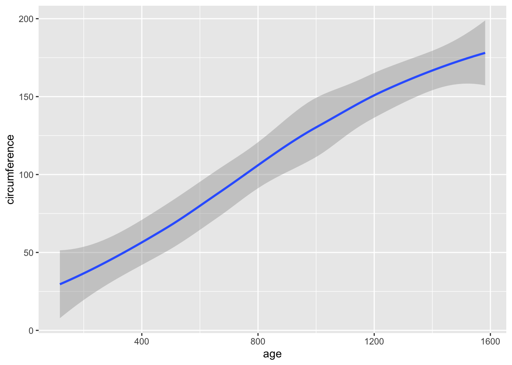

Loading required package: Rcpp
Loading 'brms' package (version 2.18.0). Useful instructions
can be found by typing help('brms'). A more detailed introduction
to the package is available through vignette('brms_overview').
Attaching package: 'brms'
The following object is masked from 'package:stats':
ar
We also need to load in the actual dataset, which in this case is built into R.
data(Orange)
Now we can run through the Bayesian workflow process with brms to analyze this data. The two questions I have are 1) is age correlated with tree circumference and 2) does this differ depending on the tree?
Let’s walk through the steps.
Pick an initial model
## Explore shape of our data ggplot(Orange, aes(circumference)) +geom_histogram()
`stat_bin()` using `bins = 30`. Pick better value with `binwidth`.
`geom_smooth()` using method = 'loess' and formula = 'y ~ x'

## Pick a model set.seed(1992)m1 <-brm(circumference ~ age, data = Orange)
Compiling Stan program...
Trying to compile a simple C file
Running /Library/Frameworks/R.framework/Resources/bin/R CMD SHLIB foo.c
clang -arch arm64 -I"/Library/Frameworks/R.framework/Resources/include" -DNDEBUG -I"/Library/Frameworks/R.framework/Versions/4.2-arm64/Resources/library/Rcpp/include/" -I"/Library/Frameworks/R.framework/Versions/4.2-arm64/Resources/library/RcppEigen/include/" -I"/Library/Frameworks/R.framework/Versions/4.2-arm64/Resources/library/RcppEigen/include/unsupported" -I"/Library/Frameworks/R.framework/Versions/4.2-arm64/Resources/library/BH/include" -I"/Library/Frameworks/R.framework/Versions/4.2-arm64/Resources/library/StanHeaders/include/src/" -I"/Library/Frameworks/R.framework/Versions/4.2-arm64/Resources/library/StanHeaders/include/" -I"/Library/Frameworks/R.framework/Versions/4.2-arm64/Resources/library/RcppParallel/include/" -I"/Library/Frameworks/R.framework/Versions/4.2-arm64/Resources/library/rstan/include" -DEIGEN_NO_DEBUG -DBOOST_DISABLE_ASSERTS -DBOOST_PENDING_INTEGER_LOG2_HPP -DSTAN_THREADS -DBOOST_NO_AUTO_PTR -include '/Library/Frameworks/R.framework/Versions/4.2-arm64/Resources/library/StanHeaders/include/stan/math/prim/mat/fun/Eigen.hpp' -D_REENTRANT -DRCPP_PARALLEL_USE_TBB=1 -I/opt/R/arm64/include -fPIC -falign-functions=64 -Wall -g -O2 -c foo.c -o foo.o
In file included from <built-in>:1:
In file included from /Library/Frameworks/R.framework/Versions/4.2-arm64/Resources/library/StanHeaders/include/stan/math/prim/mat/fun/Eigen.hpp:13:
In file included from /Library/Frameworks/R.framework/Versions/4.2-arm64/Resources/library/RcppEigen/include/Eigen/Dense:1:
In file included from /Library/Frameworks/R.framework/Versions/4.2-arm64/Resources/library/RcppEigen/include/Eigen/Core:88:
/Library/Frameworks/R.framework/Versions/4.2-arm64/Resources/library/RcppEigen/include/Eigen/src/Core/util/Macros.h:628:1: error: unknown type name 'namespace'
namespace Eigen {
^
/Library/Frameworks/R.framework/Versions/4.2-arm64/Resources/library/RcppEigen/include/Eigen/src/Core/util/Macros.h:628:16: error: expected ';' after top level declarator
namespace Eigen {
^
;
In file included from <built-in>:1:
In file included from /Library/Frameworks/R.framework/Versions/4.2-arm64/Resources/library/StanHeaders/include/stan/math/prim/mat/fun/Eigen.hpp:13:
In file included from /Library/Frameworks/R.framework/Versions/4.2-arm64/Resources/library/RcppEigen/include/Eigen/Dense:1:
/Library/Frameworks/R.framework/Versions/4.2-arm64/Resources/library/RcppEigen/include/Eigen/Core:96:10: fatal error: 'complex' file not found
#include <complex>
^~~~~~~~~
3 errors generated.
make: *** [foo.o] Error 1
Family: gaussian
Links: mu = identity; sigma = identity
Formula: circumference ~ age
Data: Orange (Number of observations: 35)
Draws: 4 chains, each with iter = 2000; warmup = 1000; thin = 1;
total post-warmup draws = 4000
Population-Level Effects:
Estimate Est.Error l-95% CI u-95% CI Rhat Bulk_ESS Tail_ESS
Intercept 17.25 9.05 -0.83 34.91 1.00 3726 2636
age 0.11 0.01 0.09 0.12 1.00 3783 2712
Family Specific Parameters:
Estimate Est.Error l-95% CI u-95% CI Rhat Bulk_ESS Tail_ESS
sigma 24.65 3.13 19.51 31.58 1.00 3110 2624
Draws were sampled using sampling(NUTS). For each parameter, Bulk_ESS
and Tail_ESS are effective sample size measures, and Rhat is the potential
scale reduction factor on split chains (at convergence, Rhat = 1).
The model results look good! Rhat = 1 and there is a pretty high effective sample size for the intercept and predictor. Therefore, we do not have any computational issues to address. Our model results suggest that age has a positive and significant effect on tree circumference (the 95% Bayesian credible interval is between 0.09 and 0.12). This can be interpreted as the circumference of the tree increases by 0.11 units for each one-unit increase in age.
The intercept shows that the estimated circumference of the tree at age 0 is 17.62, but there is a wide credible interval (0.55 to 35.12), there is quite a bit of uncertaintity with this estimate.
Sigma (family-specific parameter) tells us the variability in the response that is not explained by the model. In this case sigma is estimated to be 24.61 (3.12).
Modify model
Let’s now make our model a little more complicated. The second question we are interested in exploring is tree-level differences.
set.seed(1992)m2 <-brm(circumference ~ age + (1|Tree), data = Orange,warmup =1000, #burn in perioditer =2000, # actual sampleschains =4,prior =c(prior(normal(0,1), class = b), # specify your mean and variance, weakly informative priorprior(normal(0,1), class = Intercept)))
Compiling Stan program...
Trying to compile a simple C file
Running /Library/Frameworks/R.framework/Resources/bin/R CMD SHLIB foo.c
clang -arch arm64 -I"/Library/Frameworks/R.framework/Resources/include" -DNDEBUG -I"/Library/Frameworks/R.framework/Versions/4.2-arm64/Resources/library/Rcpp/include/" -I"/Library/Frameworks/R.framework/Versions/4.2-arm64/Resources/library/RcppEigen/include/" -I"/Library/Frameworks/R.framework/Versions/4.2-arm64/Resources/library/RcppEigen/include/unsupported" -I"/Library/Frameworks/R.framework/Versions/4.2-arm64/Resources/library/BH/include" -I"/Library/Frameworks/R.framework/Versions/4.2-arm64/Resources/library/StanHeaders/include/src/" -I"/Library/Frameworks/R.framework/Versions/4.2-arm64/Resources/library/StanHeaders/include/" -I"/Library/Frameworks/R.framework/Versions/4.2-arm64/Resources/library/RcppParallel/include/" -I"/Library/Frameworks/R.framework/Versions/4.2-arm64/Resources/library/rstan/include" -DEIGEN_NO_DEBUG -DBOOST_DISABLE_ASSERTS -DBOOST_PENDING_INTEGER_LOG2_HPP -DSTAN_THREADS -DBOOST_NO_AUTO_PTR -include '/Library/Frameworks/R.framework/Versions/4.2-arm64/Resources/library/StanHeaders/include/stan/math/prim/mat/fun/Eigen.hpp' -D_REENTRANT -DRCPP_PARALLEL_USE_TBB=1 -I/opt/R/arm64/include -fPIC -falign-functions=64 -Wall -g -O2 -c foo.c -o foo.o
In file included from <built-in>:1:
In file included from /Library/Frameworks/R.framework/Versions/4.2-arm64/Resources/library/StanHeaders/include/stan/math/prim/mat/fun/Eigen.hpp:13:
In file included from /Library/Frameworks/R.framework/Versions/4.2-arm64/Resources/library/RcppEigen/include/Eigen/Dense:1:
In file included from /Library/Frameworks/R.framework/Versions/4.2-arm64/Resources/library/RcppEigen/include/Eigen/Core:88:
/Library/Frameworks/R.framework/Versions/4.2-arm64/Resources/library/RcppEigen/include/Eigen/src/Core/util/Macros.h:628:1: error: unknown type name 'namespace'
namespace Eigen {
^
/Library/Frameworks/R.framework/Versions/4.2-arm64/Resources/library/RcppEigen/include/Eigen/src/Core/util/Macros.h:628:16: error: expected ';' after top level declarator
namespace Eigen {
^
;
In file included from <built-in>:1:
In file included from /Library/Frameworks/R.framework/Versions/4.2-arm64/Resources/library/StanHeaders/include/stan/math/prim/mat/fun/Eigen.hpp:13:
In file included from /Library/Frameworks/R.framework/Versions/4.2-arm64/Resources/library/RcppEigen/include/Eigen/Dense:1:
/Library/Frameworks/R.framework/Versions/4.2-arm64/Resources/library/RcppEigen/include/Eigen/Core:96:10: fatal error: 'complex' file not found
#include <complex>
^~~~~~~~~
3 errors generated.
make: *** [foo.o] Error 1
Family: gaussian
Links: mu = identity; sigma = identity
Formula: circumference ~ age + (1 | Tree)
Data: Orange (Number of observations: 35)
Draws: 4 chains, each with iter = 2000; warmup = 1000; thin = 1;
total post-warmup draws = 4000
Group-Level Effects:
~Tree (Number of levels: 5)
Estimate Est.Error l-95% CI u-95% CI Rhat Bulk_ESS Tail_ESS
sd(Intercept) 123.75 40.60 70.03 225.36 1.01 527 871
Population-Level Effects:
Estimate Est.Error l-95% CI u-95% CI Rhat Bulk_ESS Tail_ESS
Intercept -98.45 5.28 -109.18 -88.37 1.00 2996 2180
age 0.11 0.01 0.10 0.12 1.00 3050 2436
Family Specific Parameters:
Estimate Est.Error l-95% CI u-95% CI Rhat Bulk_ESS Tail_ESS
sigma 15.95 2.32 12.35 21.55 1.00 2102 2112
Draws were sampled using sampling(NUTS). For each parameter, Bulk_ESS
and Tail_ESS are effective sample size measures, and Rhat is the potential
scale reduction factor on split chains (at convergence, Rhat = 1).
loo(m2)
Computed from 4000 by 35 log-likelihood matrix
Estimate SE
elpd_loo -149.7 3.5
p_loo 6.5 1.2
looic 299.4 7.1
------
Monte Carlo SE of elpd_loo is 0.1.
Pareto k diagnostic values:
Count Pct. Min. n_eff
(-Inf, 0.5] (good) 34 97.1% 885
(0.5, 0.7] (ok) 1 2.9% 792
(0.7, 1] (bad) 0 0.0% <NA>
(1, Inf) (very bad) 0 0.0% <NA>
All Pareto k estimates are ok (k < 0.7).
See help('pareto-k-diagnostic') for details.
## Posterior predictive check: https://www.monicaalexander.com/posts/2020-28-02-bayes_viz/pp_check(m2, type ="dens_overlay", nsamples =100)
Warning: Argument 'nsamples' is deprecated. Please use argument 'ndraws'
instead.
pp_check(m2, type ="stat", stat ='median', nsamples =100)
Warning: Argument 'nsamples' is deprecated. Please use argument 'ndraws'
instead.
`stat_bin()` using `bins = 30`. Pick better value with `binwidth`.
pp_check(m2,type ="intervals_grouped", group ="Tree") #grouped by Tree
Using all posterior draws for ppc type 'intervals_grouped' by default.
## Errorplot(m2) #shape should reflect the distribution of the model
## Conditional effectsconditional_effects(m2) #no group level effects without re_formula = NULL
Again, model convergence and sampling efficiency look good. The estimate & error look pretty similar to m1, however the intercept is very different. We can see that the standard deviation of the Tree intercepts is quite large, 124.49, with an error of 37.55. This suggests there is quite a bit of variation between trees.